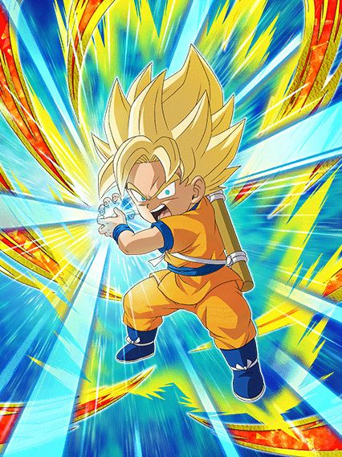

Daima pra fechar o ano com chave de ouro.
Acho que é óbvio o suficiente o quão bom esse ano foi pro Dokkan.
Daima pra fechar o ano com chave de ouro.
Acho que é óbvio o suficiente o quão bom esse ano foi pro Dokkan.

No primeiro turno desse cara o dano dele é podre, mas ele tem 90% de chance de desvio e 50% de redução de dano
Depois disso a redução cai pra 30% e o desvio pra 70% nos slots 1 e 2, o que ainda é bom
Depois de desviar 5 vezes o dano dele fica ridículo de absurdo, ele fica Super Efetivo e pode usar a Active dele que dá ainda mais dano
E pra completar, ele dá 41% de ATK pra todos aliados por 2 turnos no SA... pq sim, suporte é bom.
Junta isso com as animações insanas e você tem um Dokkan Fest incrível.
Quem deixou o cara com 1 única luta ser o melhor TUR?
Esse cara é outro líder pra Demonic Power, e um suporte ridículo de forte, dando 50% de ATK e DEF por 3 turnos só por estar no slot 3
Ele também tem 50% de chance de desvio, juntamente com uma quantidade ridícula de adicionais com chance de serem SAs, e cada SA aumenta a chance de desvio no turno até chegar a 80%
Mesmo se ele não tivesse o desvio, o dano dele é absurdo e a defesa nem se fala, peak.
Você chegou ao fim dessa página!
Bom.. por enquanto né, a celebração tá acontecendo agora e tals..
Obrigado por ler tudo, e fica a vontade pra ver outras